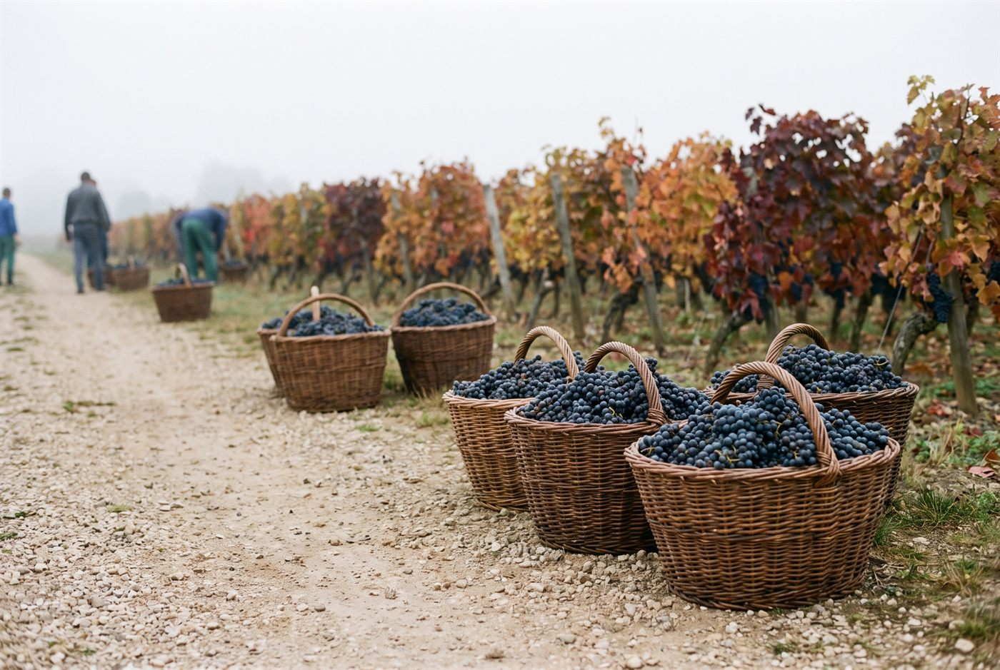

Les domaines · Côte de Nuits · Gevrey-Chambertin
Gevrey-Chambertin · Côte de Nuits
Domaine Lucien Boillot
Gevrey-Chambertin et Volnay de vieilles vignes, purs et sans artifice.

Ambiance de Gevrey-Chambertin
Créé dans les années 1950 par Lucien Boillot, le domaine est dirigé depuis 2003 par son fils Pierre, qui a alors repris sa part des vignes familiales après la séparation d'avec son frère Louis. Un peu plus de sept hectares, dont 4,3 en Côte de Nuits autour de Gevrey-Chambertin et 2,8 en Côte de Beaune à Volnay, Pommard et Puligny-Montrachet, donnent une quinzaine d'appellations. Vendanges manuelles, égrappage, levures indigènes, extraction douce et élevage de 16 à 18 mois avec environ 30 % de bois neuf : Pierre Boillot recherche des vins transparents, purs et fins.
Rouges
- Cépage · Pinot noirParcelle de 0,4 ha plantée en 1922 sur argilo-calcaire.
- Cépage · Pinot noir
- Cépage · Pinot noirMinuscule parcelle de 0,09 ha plantée en 1953, séparée du grand cru Mazis-Chambertin par un simple chemin.
- Cépage · Pinot noirLieu-dit du village traité avec le même soin que les premiers crus du domaine.
- Cépage · Pinot noirAssemblage de vieilles vignes de plusieurs lieux-dits du village.
- Cépage · Pinot noir
- Cépage · Pinot noir
- Cépage · Pinot noir
- Cépage · Pinot noir
- Cépage · Pinot noir
Ces cuvées vous parlent ?
Demander les disponibilités